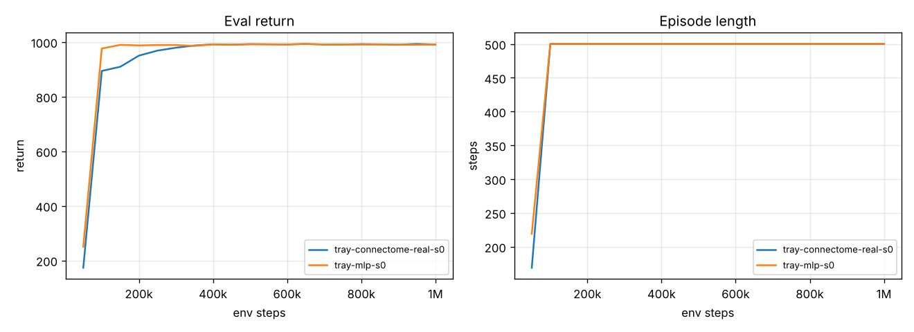
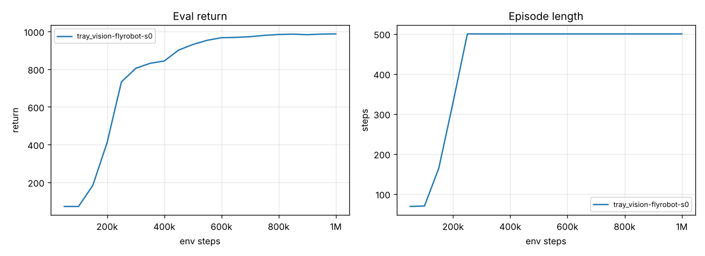
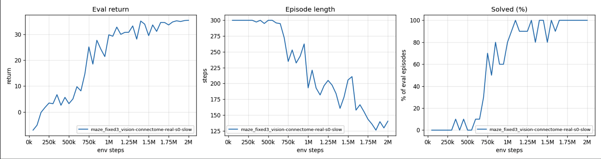
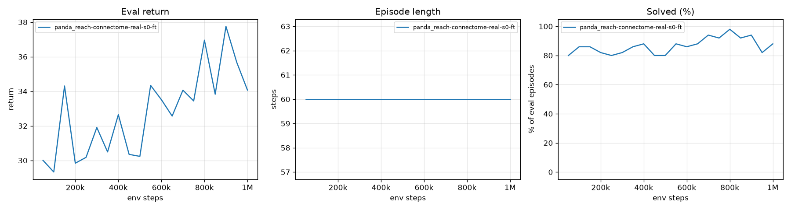
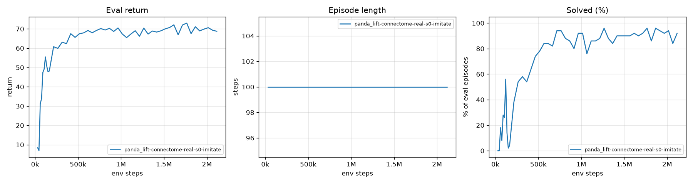
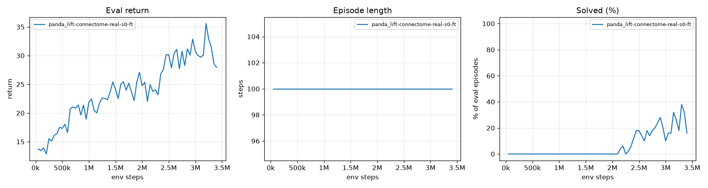

How the robots are wired
The fly brain has been mapped neuron by neuron: about 139,000 neurons and 15 million connections (FlyWire). For each robot I take the few thousand neurons that lie on the real pathways from the fly's eye and body sense to its command neurons, keep who connects to whom and whether each connection excites or inhibits, and train only the connection strengths with reinforcement learning.
The eye drives the fly's photoreceptors: in the first robots one camera pixel per photoreceptor, in the drone and the Panda arm a fly-like compound eye whose facets feed the R1–6, R7 (ultraviolet) and R8 (green) cells. Body readings go into ascending neurons, the channel that normally carries body sensation up to the fly's brain. The robot is driven from descending neurons, the brain's outgoing commands.
Every task below is a single training run, so read the numbers as first results, not a benchmark. The videos are short; each one has full-screen in its controls.
Balance a ball on a tray, given its position as numbers
DoneThe first network used the 1,000 most connected fly neurons, with inputs and outputs picked by me rather than by biology. It learned to keep a rolling ball on a flat tray in about 100,000 steps and coped with noise, pushes and a heavier ball. An easy start, so the tasks got harder.
- Full 10 s from ~100k steps
- Robust to noise, pushes, heavy ball


A tilt-maze puzzle, given the ball's position as numbers
PartlyLike the wooden labyrinth toy: tilt the board so the ball rolls round the walls into the green goal, and stop it there. The network gets the wall layout but not the route. On one fixed maze it reached 30–40 % after a million steps, still rising; new random mazes were too hard.
- Fixed maze: 30–40 % at 1M steps
- Random mazes: not yet
Shortcuts it found, and how they were closed
It learned to flick the ball over the walls (fixed with a glass lid), and to hover in and out of the goal to collect reward (fixed by taking the resting reward back if the ball leaves).
Balance a ball by camera, wired like a fly
DoneThen the robot was rewired through the fly's own channels, as in the diagram, and the ball's position was taken away: the brain gets only a 16×16 camera image and its joints. From 250,000 steps on it kept the ball for the full 10 seconds, also with a heavier ball and random shoves.
- Normal, heavy ball, pushes: 100 %
- Ball hidden: 0 %
- Camera noise: 0 %


All tests
| Test (10 new episodes) | Kept the ball 10 s | Mean steps (of 500) |
|---|---|---|
| Normal conditions | 100 % | 500 |
| Ball three times heavier | 100 % | 500 |
| Random pushes on the ball | 100 % | 500 |
| Light noise on the camera image | 0 % | 144 |
| Strong noise on the camera image | 0 % | 63 |
| Ball removed from the camera image | 0 % | 28 |
Without seeing the ball it fails at once, so it really steers by what comes through its eye. Its weak spot is a noisy picture, which it never saw while learning.
The tilt maze, seen only through the camera
DoneThe same camera brain had to see the walls, goal and ball in a 16×16 picture, find the way round and stop the ball in the goal. With fast motors it pinned the ball in the goal's corner and never counted as solved. With slower, smoother motors and practice starts along the route, it solved every test from 1.1M steps, in about 2.6 seconds.
- Trained maze: 100 %
- Heavy ball: 100 %
- Pushes: 60 %
- New mazes: 0 %


All tests
| Test (10 episodes) | Solved | Mean steps (of 300) |
|---|---|---|
| The trained maze | 100 % | 132 |
| Ball three times heavier | 100 % | 141 |
| Random pushes on the ball | 60 % | 220 |
| Noise on the camera image | 0 % | 300 |
| Ball removed from the camera image | 0 % | 300 |
| Mazes it has never seen | 0 % | 300 |
It steers by what it sees, but it memorised this one maze rather than learning to read walls. Training on a new random maze every episode stalled, which is one reason the project moved to a real robot arm with more varied but simpler tasks.
A drone with a fly's compound eyes
On holdA fly's brain evolved to steer flight, so the next robot was a small quadcopter seeing through two compound eyes of 160 facets each, covering almost every direction. A simple stabiliser keeps it level, the job a fly's halteres do outside the brain; the 4,000-neuron fly brain decides where to fly. Task: find a yellow ball somewhere in a room, among blue decoys, in wind and gusts, and hover on it.
- Eye-only pilot: 83 %
- Ball invisible: 0 %
- Brain at 600k: reaches close balls, rarely far ones
What was learned building it
A first version painted the floor green: the yellow ball was camouflaged against it, much as a flower can be in grass, so the room is now grey. A penalty for jerky commands punished the network's own exploration and stalled learning, so it was removed. The drone is paused to focus on the arm.
Franka Panda arm: reach a block it finds by eye
DoneA real lab robot (Franka Panda with its two-finger gripper), set up the way robot-learning benchmarks do it: the brain's command neurons say "move the hand this way, open or close", and a controller turns that into joint motions, much as a fly's nerve cord turns descending commands into leg movements. Two compound eyes: one on a head beside the table to find things, one on the wrist to line up. Task: bring the gripper just above a yellow block that appears somewhere new each time, with blue decoys around.
- Across the table: 73 % → 94 %
- Clean: 90 %
- 3× eye noise: 75 %
- Block invisible: 5 %


First run · 109/150 (73 %)
After edge practice · 141/150 (94 %)
Each cell: a block position on the table (5 × 5 grid, seen from the robot), number of successes out of 6 tries with different starts. Stronger colour = more successes.
Tests, corners and what went wrong on the way
| Test (best brain, 20 episodes) | Reached |
|---|---|
| Normal conditions | 90 % |
| No decoy blocks | 90 % |
| Three times more noise in the eyes | 75 % |
| Light twice as dim or bright | 70 % |
| Yellow block made invisible | 5 % |
| Exact corner tip (20 tries) | First run | After edge practice |
|---|---|---|
| Centre (reference) | 18 | 20 |
| Far left | 9 | 15 |
| Near left | 6 | 11 |
| Near right | 5 | 10 |
| Far right | 10 | 4 |
Corner misses end about 30 cm away, drifting towards the table centre: at the extreme tips the block is a small, dim dot for the head eye and outside the downward wrist eye, so the brain falls back to where blocks usually are. Decoys hardly matter (82–83 % with 0, 1 or 2).
On the way: a success rule that also demanded a nearly still hand could not be met under the network's own exploration jitter (even a perfect pilot with that jitter passed 27 %), so it became "stay within 3 cm for 0.2 s". The first run peaked at 90 % and then declined, so the best brain was kept and fine-tuned at a lower learning rate, with more practice blocks near the table edges.
Franka Panda arm: grasp the block and lift it
DoneSame robot, eyes and brain, plus touch: the brain feels whether each finger presses on something, like a fly's mechanosensors. It must close both fingers on the yellow block, lift it to a point 8 cm straight above where it lay, and hold it there.
Trial and error alone (v9) got the first lifts after 2 million steps and about one success in five by 3.2 million, but the lifts were sloppy: the block was typically carried about 20 cm sideways while going up.
Teacher, then practice (v10): a scripted teacher that knows where the block is showed the fly brain the right move in the situations the brain itself got into (10 short rounds, 165k steps, the method called DAgger). Then the brain practised on its own with trial and error. The teacher only supplied training targets: the fly brain never receives the block's position, and every test, map and video below is the brain alone, using its eyes. Within 0.6 million practice steps it solved 84 %, and around 90 % from then on.
- Solved alone: 90 % (was ~20 %)
- Off target at the end: 1.3 cm (was ~20 cm)
- 3× eye noise: 96 %
- Block invisible: 0 %


Before: trial and error only (v9) · 52/200 (26 %)
After: teacher, then practice (v10) · 180/200 (90 %)
Each cell: a block position on the table (5 × 5 grid, seen from the robot, decoys removed), number of successes out of 8 tries with different starts. Before: block at least 7.5 cm up at the end (v9's own, looser rule). After: block held within 2.5 cm of the point straight above its start (the stricter rule). The right edge is still the weakest.
Precision, before and after (200 new layouts each)
| Measure | Trial and error (v9) | Teacher, then practice (v10) |
|---|---|---|
| Grasped the block | 85 % | 100 % |
| Block 7.5 cm or more up at the end | 29 % | 98 % |
| Held at the target point at the end (within 2.5 cm) | 0 % | 94 % |
| Distance from the target point at the end (median) | 20.4 cm | 1.3 cm |
| Largest sideways drift while in the air (median) | 23.4 cm | 1.1 cm |
| Time to finish (median, of 4 s) | – | 1.5 s |
| Test (best brain, 50 episodes) | v9 | v10 |
|---|---|---|
| Normal conditions | 16 % | 90 % |
| No decoy blocks | 24 % | 90 % |
| Three times more noise in the eyes | 8 % | 96 % |
| Light twice as dim or bright | 20 % | 60 % |
| Yellow block made invisible | 0 % | 0 % |
It still works only by eye (0 % with the block invisible). Lighting is the weak spot: it never saw lighting changes while practising. One training run.
How the teacher rounds went
Round 1 the teacher drives every step; then the brain drives more and more (50 %, 25 % …) while the teacher keeps saying what it would do. The brain alone solved 0 % after rounds 1–2, up to 56 % after round 7, then fell to 4 % by round 10: once the brain drove almost all the time, the examples filled with its own near-misses, and it lost the final lift while keeping a clean reach and grasp. Practice with trial and error then took it from 4 % to about 90 %. During practice a second network that judges how well things are going (the critic) saw the true positions; it is used only for learning, never for acting.
Before: trial and error alone (v9)
For 2 million steps it found the block, went down to it and learned to close its fingers, but never completed a lift. At 2.15 million steps the first full lifts appeared, and by 3.2 million it solved about one attempt in five, often swinging the block sideways while raising it.


How it got there, and the tests
| Steps | Change | Effect |
|---|---|---|
| 0–0.7M | start from the reaching brain | goes down to the block, never grasps |
| 0.75M | some practice episodes start at the block (open, or already holding it) | learns to close and hold |
| 1.1M | exploration noise reset once, lower learning rate | aim restored; grasps; lifts a little |
| 2.15M | – | first full lifts |
| 3.2M | – | best brain: about 1 in 5 solved |
| Test (best brain, 50 episodes) | Solved |
|---|---|
| Normal conditions | 16 % |
| No decoy blocks | 24 % |
| Light twice as dim or bright | 20 % |
| Three times more noise in the eyes | 8 % |
| Yellow block made invisible | 0 % |
One training run; 50-episode tests swing by about ±10 points. Videos and tests always start from scratch (no help), unlike some practice episodes.
Checks before training
| Behaviour (40 episodes) | Return | Lifted |
|---|---|---|
| Random, or doing nothing | 2 | 0 % |
| Hovering above the block (the reaching brain) | 13 | 0 % |
| Touching it with a closed gripper | 15 | 0 % |
| Grasping but never lifting | 31 | 0 % |
| Scripted pilot with training-like noise | 52 | 78 % |
| Scripted pilot | 66 | 92 % |
Every step towards the goal pays more, so the reward cannot be gamed by stopping halfway.
What's next
The aim is to test whether a fly brain can learn basic human-like handling tasks with a robot arm, and then to use the senses a fly is best at.
- Robust to lightingthe lift drops to 60 % under 2× dimmer or brighter light; practise under varied lighting
- Pick and placecarry the block into a bin
- Sort by colourthree colours, three bins
- Add smellwire in the fly's antennal lobe and mushroom body, the circuits flies use to judge fruit; real odour-response data for fly smell neurons exists
- Sort fruit by smellfruits that look the same but smell different, so the eyes alone cannot do it
- Colour and smell togetherand a conflict test: it looks like one fruit but smells like another; which sense wins?
- Taste by touchflies taste with their feet; taste sensors on the gripper fingers
- Ripe or rottena fly's natural strength: fermentation odours
- Formalin-treated or natural fruitreject adulterated fruit; there is no published data on how flies respond to formaldehyde, so the fly response would be an assumption
What is biological here, and what is not
| Part | Status |
|---|---|
| Which neurons are used (eye, body sense, commands) | Real fly cell types |
| Who connects to whom, excitatory or inhibitory | Real wiring |
| Route from eye through optic lobe and central brain to commands | Real pathways |
| Connection strengths | Start from real synapse counts, then retrained |
| Neurons | Simple rate units, not spiking cells |
| The eye's input | Early arm: a 16×16 grey image. Drone and Panda: a fly-like compound eye with real photoreceptor types, but 160 instead of ~800 facets per eye and 25 instead of ~200 images per second |
| Below the brain | A controller turns hand commands into joint motions (Panda) or keeps the drone level, standing in for the nerve cord and halteres, which the brain map does not include |
| Learning | Reinforcement learning (PPO), not how a fly learns |
So this is not a simulated fly mind. It uses the fly brain's circuit layout as the design of a robot controller, and asks how well that design can learn tasks a fly never does.
Run it yourself
Runs on a laptop, a free Kaggle notebook or an always-on Linux PC (see scripts/desktop/).
git clone https://github.com/nihal4/connectome-tray-balance
cd connectome-tray-balance
pip install -r requirements.txt
python scripts/download_connectome.py # fly wiring + cell types
python scripts/download_panda.py # Franka Panda model (MuJoCo Menagerie)
python scripts/build_flybrain.py --eye compound --facets 160 --n 4000 --hops 5
python scripts/train.py --env panda_reach --policy connectome \
--subset data/flybrain_eye160_N4000.npz --profile desktop --random_start 0.3